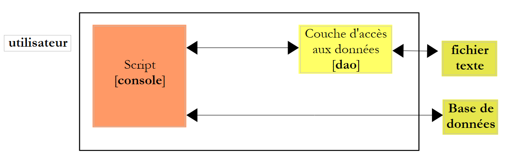

10. تمرين [IMPOTS] مع MySQL
 |
10.1. نقل ملف نصي إلى جدول MySQL
سيقوم البرنامج النصي التالي بنقل البيانات من الملف النصي التالي:
12620:13190:15640:24740:31810:39970:48360:55790:92970:127860:151250:172040:195000:0
0:0.05:0.1:0.15:0.2:0.25:0.3:0.35:0.4:0.45:0.5:0.55:0.6:0.65
0:631:1290.5:272.5:3309.5:4900:6898.5:9316.5:12106:16754.5:23147.5:30710:39312:49062
إلى الجدول [impots] في قاعدة البيانات التالية: MySQL [dbimpots]:
 |
سيتم الاتصال بقاعدة البيانات [dbimpots] باستخدام الهوية (root,"").
سنستخدم البنية التالية:
 |
سيستخدم البرنامج النصي [console] الذي سنكتبه الفئة [ImpotsFile] للوصول إلى بيانات الملف النصي. سيتم الوصول إلى قاعدة البيانات للكتابة باستخدام الطرق التي رأيناها سابقًا.
فيما يلي كود البرنامج النصي:
# -*- coding=utf-8 -*-
# استيراد وحدة الفئات الضريبية
from impots import *
import re
# --------------------------------------------------------------------------
def copyToMysql(limites,coeffR,coeffN,HOTE,USER,PWD,BASE,TABLE):
# نسخ الجداول الرقمية الثلاثة للحدود، coeffR، coeffN
# في الجدول TABLE في قاعدة بيانات mysql BASE
# قاعدة بيانات mysql موجودة على الجهاز HOTE
# يتم تعريف المستخدم بواسطة USER و PWD
# يتم وضع الاستعلامات SQL في قائمة
# حذف الجدول
requetes=["drop table %s" % (TABLE)]
# إنشاء الجدول
requete="create table %s (limites decimal(10,2), coeffR decimal(6,2), coeffN decimal(10,2))" % (TABLE)
requetes.append(requete)
# التعبئة
for i in range(len(limites)):
# استعلام الإدراج
requetes.append("insert into %s (limites,coeffR,coeffN) values (%s,%s,%s)" % (TABLE,limites[i],coeffR[i],coeffN[i]))
# تنفيذ الأوامر SQL
return executerCommandes(HOTE,USER,PWD,BASE,requetes,False,False)
def executerCommandes(HOTE,ID,PWD,BASE,requetes,suivi=False,arret=True):
# استخدام الاتصال (HOTE، ID، PWD، BASE)
# يُنفذ عبر هذا الاتصال الأوامر SQL الموجودة في قائمة الطلبات
# إذا كانت قيمة «المتابعة» = «صحيح»، فإن كل عملية تنفيذ لأمر SQL تُعرض مع إشارة إلى نجاحها أو فشلها
# إذا كانت arret=False، تتوقف الدالة عند أول خطأ تصادفه، وإلا فإنها تنفذ جميع أوامر SQL
# تُرجع الدالة قائمة (عدد الأخطاء، الخطأ 1، الخطأ 2، ...)
# الاتصال
try:
connexion=MySQLdb.connect(host=HOTE,user=ID,passwd=PWD,db=BASE)
except MySQLdb.OperationalError,erreur:
return [1,"Erreur lors de la connexion a MySQL sous l'identite (%s,%s,%s,%s) : %s" % (HOTE, ID, PWD, BASE, erreur)]
# يتم طلب مؤشر
curseur=connexion.cursor()
# تنفيذ الاستعلامات SQL الموجودة في قائمة الاستعلامات
# يتم تنفيذها - في البداية لا توجد أخطاء
erreurs=[0]
for i in range(len(requetes)):
# يتم وضع الاستعلام في متغير محلي
requete=requetes[i]
# هل الطلب فارغ؟
if re.match(r"^\s*$",requete):
continue
# تنفيذ الاستعلام i
erreur=""
try:
curseur.execute(requete)
except Exception, erreur:
pass
# هل حدث خطأ؟
if erreur:
# خطأ آخر
erreurs[0]+=1
# رسالة خطأ
msg="%s : Erreur (%s)" % (requete[0:len(requete)-1],erreur)
erreurs.append(msg)
# هل يتم عرض الشاشة أم لا؟
if suivi:
print msg
# هل نتوقف؟
if arret:
return erreurs
else:
if suivi:
# هل نعرض الاستعلام بدون علامة نهاية السطر؟
print "%s : Execution reussie" % (cutNewLineChar(requete))
# معلومات حول نتيجة الاستعلام الذي تم تنفيذه
afficherInfos(curseur)
# إغلاق الاتصال
try:
connexion.commit()
connexion.close()
except MySQLdb.OperationalError,erreur:
# خطأ آخر
erreurs[0]+=1
# رسالة خطأ
msg="%s : Erreur (%s)" % (requete,erreur)
erreurs.append(msg)
# العودة
return erreurs
# ------------------------------------------------ الرئيسي
# هوية المستخدم
USER="root"
PWD=""
# الجهاز المضيف لنظام إدارة قواعد البيانات
HOTE="localhost"
# هوية قاعدة البيانات
BASE="dbimpots"
# هوية جدول البيانات
TABLE="impots"
# ملف البيانات
IMPOTS="impots.txt"
# إنشاء مثيل لطبقة [dao]
try:
dao=ImpotsFile(IMPOTS)
except (IOError, ImpotsError) as infos:
print ("Une erreur s'est produite : {0}".format(infos))
sys.exit()
# نقوم بنقل البيانات المسترجعة إلى جدول في قاعدة بيانات MySQL
erreurs=copyToMysql(dao.limites,dao.coeffR,dao.coeffN,HOTE,USER,PWD,BASE,TABLE)
if erreurs[0]:
for i in range(1,len(erreurs)):
print erreurs[i]
else:
print "Transfert opere"
# النهاية
sys.exit()
ملاحظات:
- الأسطر 106-110: يتم إنشاء مثيل للفئة [ImpotsFile] التي تم عرضها في الفقرة 8.1؛
- السطر 113: يتم نقل المصفوفات limites و coeffR و coeffN إلى قاعدة بيانات MySQL؛
- السطر 8: تقوم الدالة copyToMysql بتنفيذ هذا النقل. تقوم الدالة copyToMysql بإنشاء جدول بالاستعلامات المطلوب تنفيذها وتقوم بتنفيذها بواسطة الدالة executerCommandes، السطر 25؛
- الأسطر 28-89: الدالة executerCommandes هي نفسها التي سبق عرضها في الفقرة 9.7 مع اختلاف واحد: بدلاً من أن تكون الاستعلامات في ملف نصي، فإنها موجودة في قائمة؛
الملف النصي impots.txt:
12620:13190:15640:24740:31810:39970:48360:55790:92970:127860:151250:172040:195000:0
0:0.05:0.1:0.15:0.2:0.25:0.3:0.35:0.4:0.45:0.5:0.55:0.6:0.65
0:631:1290.5:272.5:3309.5:4900:6898.5:9316.5:12106:16754.5:23147.5:30710:39312:49062
نتائج العرض على الشاشة:
التحقق باستخدام phpMyAdmin:
|
10.2. برنامج حساب الضريبة
الآن بعد أن أصبحت البيانات اللازمة لحساب الضريبة موجودة في قاعدة بيانات، يمكننا كتابة البرنامج النصي لحساب الضريبة. نستخدم مرة أخرى بنية ثلاثية الطبقات:
 |
سيتم ربط الطبقة الجديدة [dao] بـ SGBD و MySQL، وسيتم تنفيذها بواسطة الفئة [ImpotsMySQL]. وستوفر للطبقة [metier] نفس الواجهة التي كانت موجودة سابقًا، والتي تتكون من الطريقة الوحيدة getData التي تُرجع التوبول (الحدود، coeffR، coeffN). وبالتالي، لن تتغير الطبقة [metier] مقارنة بالإصدار السابق.
10.3. الفئة [ImpotsMySQL]
يتم الآن تنفيذ الطبقة [dao] بواسطة الفئة [ImpotsMySQL] التالية (ملف impots.py):
class ImpotsMySQL:
# منشئ
def __init__(self,HOTE,USER,PWD,BASE,TABLE):
# تُهيئ سمات الحدود، coeffR، coeffN
# تم وضع البيانات اللازمة لحساب الضريبة في الجدول mysqL TABLE
# التابعة لقاعدة البيانات BASE. وتتميز الجدولة بالبنية التالية
# حدود decimal(10,2)، coeffR decimal(10,2)، coeffN decimal(10,2)
# يتم الاتصال بقاعدة بيانات MySQL الخاصة بالجهاز HOTE باستخدام الهوية (USER,PWD)
# يُطلق استثناءً في حالة حدوث أي خطأ
# الاتصال بقاعدة بيانات MySQL
connexion=MySQLdb.connect(host=HOTE,user=USER,passwd=PWD,db=BASE)
# يتم طلب مؤشر
curseur=connexion.cursor()
# قراءة كتلة من الجدول TABLE
requete="select limites,coeffR,coeffN from %s" % (TABLE)
# تنفيذ الاستعلام [requete] على قاعدة البيانات [base] الخاصة بالاتصال [connexion]
curseur.execute(requete)
# معالجة نتيجة الاستعلام
ligne=curseur.fetchone()
self.limites=[]
self.coeffR=[]
self.coeffN=[]
while(ligne):
# الصف الحالي
self.limites.append(ligne[0])
self.coeffR.append(ligne[1])
self.coeffN.append(ligne[2])
# السطر التالي
ligne=curseur.fetchone()
# إنهاء الاتصال
connexion.close()
def getData(self):
return (self.limites, self.coeffR, self.coeffN)
ملاحظات:
- السطر 18: الاستعلام SQL SELECT الذي يطلب البيانات من قاعدة البيانات MySQL. ثم يتم معالجة الأسطر الناتجة عن SELECT واحدة تلو الأخرى بواسطة [curseur.fetchone] (السطران 22 و32) لإنشاء الجداول limites، coeffR، وcoeffN (السطور 28-30)؛
- الطريقة getData الخاصة بواجهة الطبقة [dao].
10.4. نص البرنامج النصي لوحدة التحكم
فيما يلي كود البرنامج النصي لوحدة التحكم (impots_04):
# -*- coding=utf-8 -*-
# استيراد وحدة الفئات Impots*
from impots import *
# ------------------------------------------------ main
# هوية المستخدم
USER="root"
PWD=""
# الجهاز المضيف لنظام إدارة قواعد البيانات
HOTE="localhost"
# هوية قاعدة البيانات
BASE="dbimpots"
# معرف جدول البيانات
TABLE="impots"
# ملف الإدخال
DATA="data.txt"
# ملف المخرجات
RESULTATS="resultats.txt"
# مثيل الطبقة [metier]
try:
metier=ImpotsMetier(ImpotsMySQL(HOTE,USER,PWD,BASE,TABLE))
except (IOError, ImpotsError) as infos:
print ("Une erreur s'est produite : {0}".format(infos))
sys.exit()
# تم وضع البيانات اللازمة لحساب الضريبة في الملف IMPOTS
# بمعدل سطر واحد لكل جدول بالصيغة
# القيمة1:القيمة2:القيمة3،...
# قراءة البيانات
try:
data=open(DATA,"r")
except:
print "Impossible d'ouvrir en lecture le fichier des donnees [DATA]"
sys.exit()
# فتح ملف النتائج
try:
resultats=open(RESULTATS,"w")
except:
print "Impossible de creer le fichier des résultats [RESULTATS]"
sys.exit()
# الأدوات المساعدة
u=Utilitaires()
# معالجة السطر الحالي من ملف البيانات
ligne=data.readline()
while(ligne != ''):
# إزالة علامة نهاية السطر إن وجدت
ligne=u.cutNewLineChar(ligne)
# استرجاع الحقول الثلاثة «متزوج:أطفال:راتب» التي تشكل السطر
(marie,enfants,salaire)=ligne.split(",")
enfants=int(enfants)
salaire=int(salaire)
# يتم حساب الضريبة
impot=metier.calculer(marie,enfants,salaire)
# يتم تسجيل النتيجة
resultats.write("{0}:{1}:{2}:{3}\n".format(marie,enfants,salaire,impot))
# يتم قراءة سطر جديد
ligne=data.readline()
# يتم إغلاق الملفات
data.close()
resultats.close()
ملاحظات:
- السطر 23: إنشاء مثيلات للطبقات [dao] و [metier]؛
- أما باقي الكود فهو معروف.
نفس النتائج التي تم الحصول عليها في الإصدارات السابقة من التمرين.